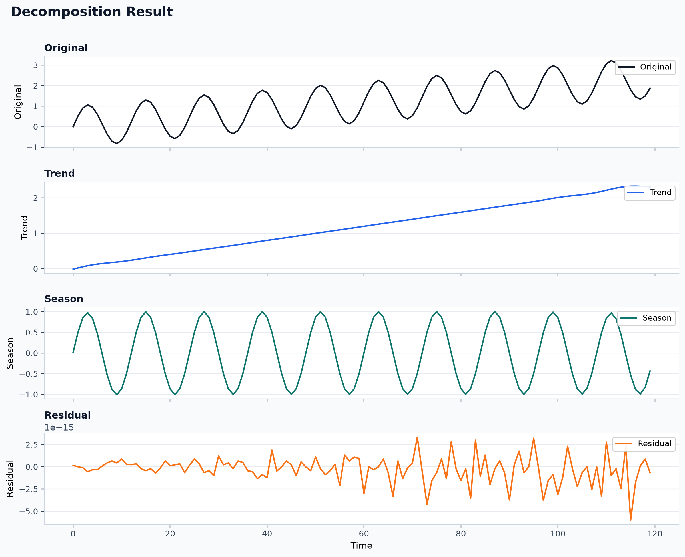
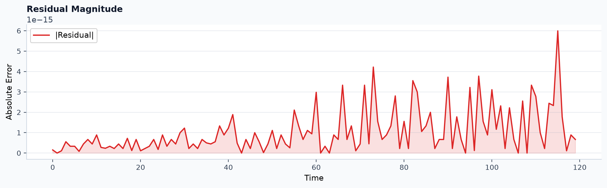

Tutorial: CLI and profiling
The CLI supports five especially useful operational paths:
runbatchprofileschemarecommend
All commands below use files that ship with this repository.
Single-file run
python -m detime run \
--method SSA \
--series examples/data/example_series.csv \
--col value \
--param window=24 \
--param rank=6 \
--param primary_period=12 \
--out-dir out/ssa \
--output-mode summary \
--plot
Published stdout from the current docs build:
Running SSA on examples/data/example_series.csv...
Done. Results saved to out/ssa
Published output files:


Representative summary excerpt:
{
"mode": "summary",
"trend": { "shape": [120], "std": 0.6917 },
"season": { "shape": [120], "std": 0.7036 },
"residual": { "shape": [120], "l2_norm": 0.0 },
"meta": {
"backend_used": "native",
"method": "SSA",
"window": 24,
"rank": 6
}
}
Published plots from the same run:


Multivariate run
python -m detime run \
--method MSSA \
--series examples/data/example_multivariate.csv \
--cols x0,x1 \
--param window=24 \
--param rank=8 \
--param primary_period=12 \
--out-dir out/mssa \
--output-mode summary
Published stdout from the current docs build:
Running MSSA on examples/data/example_multivariate.csv...
Done. Results saved to out/mssa
Published output files:
Representative summary excerpt:
{
"mode": "summary",
"trend": { "shape": [120, 2] },
"season": { "shape": [120, 2] },
"components": {
"modes": { "shape": [8, 120, 2] }
},
"meta": {
"backend_used": "python",
"channel_names": ["x0", "x1"]
}
}
Batch processing
python -m detime batch \
--method STD \
--glob "examples/data/batch/*.csv" \
--col value \
--param period=12 \
--out-dir out/std_batch \
--output-mode meta
Published stdout from the current docs build:
Found 2 files. Processing...
Published output files:
Representative meta payload excerpt from series_a_meta.json:
{
"mode": "meta",
"meta": {
"method": "STD",
"period": 12,
"n_cycles": 2,
"backend_used": "native",
"input_shape": [24]
},
"diagnostics": {
"component_names": ["dispersion", "seasonal_shape"]
}
}
Runtime profiling
Text output now respects --format text on stdout as well as saved reports.
python -m detime profile \
--method SSA \
--series examples/data/example_series.csv \
--col value \
--param window=24 \
--param rank=6 \
--param primary_period=12 \
--repeat 5 \
--warmup 1 \
--format text
Published stdout from the current docs build:
method=SSA
backend_requested=auto
backend_used=python
speed_mode=exact
repeat=5
warmup=1
...
Raw text report:
For multivariate JSON profiling:
python -m detime profile \
--method MSSA \
--series examples/data/example_multivariate.csv \
--cols x0,x1 \
--param window=24 \
--param primary_period=12 \
--repeat 3 \
--format json
Published JSON output:
Representative excerpt:
{
"method": "MSSA",
"backend_used": "python",
"columns": ["x0", "x1"],
"repeat": 3,
"summary": {
"mean_ms": 11.9110,
"min_ms": 11.6017,
"p95_ms": 12.0886
}
}
Backend selection and saved reports
python -m detime profile \
--method STD \
--series examples/data/example_series.csv \
--col value \
--param period=12 \
--backend auto \
--repeat 10 \
--warmup 2 \
--format text \
--output out/profile/std_auto.txt
Published command stdout:
Profile report written to out/profile/std_auto.txt
Published saved report:
Machine-facing helpers
python -m detime schema --name method-registry
python -m detime recommend --length 192 --channels 3 --prefer accuracy --format text
Published outputs:
Published metadata-based shortlist excerpt:
1. MSSA (15.75)
Multivariate SSA for shared-structure decomposition across channels.
2. STDR (11.75)
Seasonal-trend-dispersion decomposition with an averaged cycle shape and a remainder.
3. STD (9.25)
Fast seasonal-trend decomposition with dispersion-aware diagnostics.